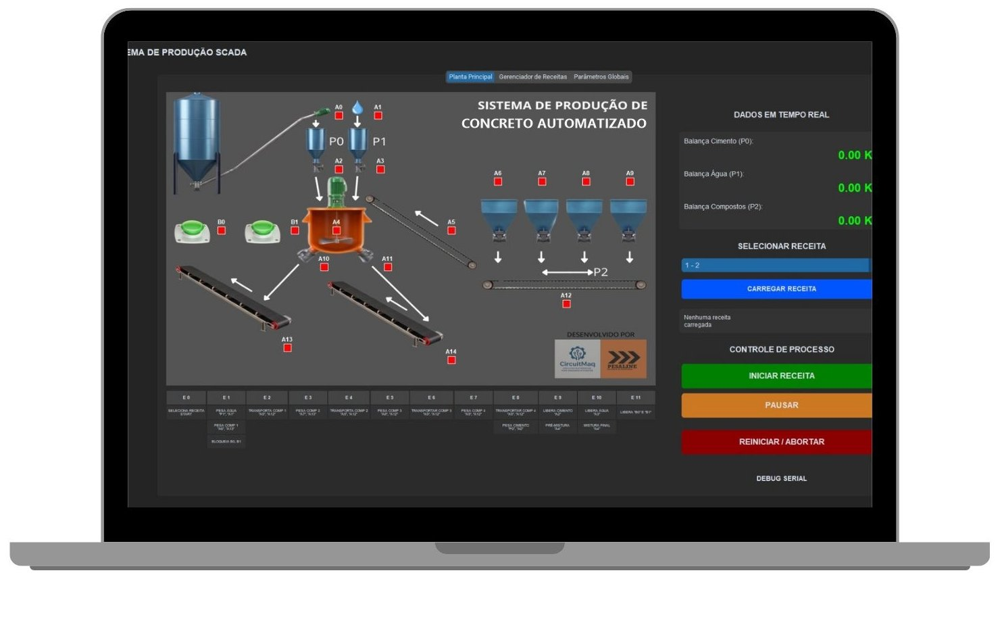
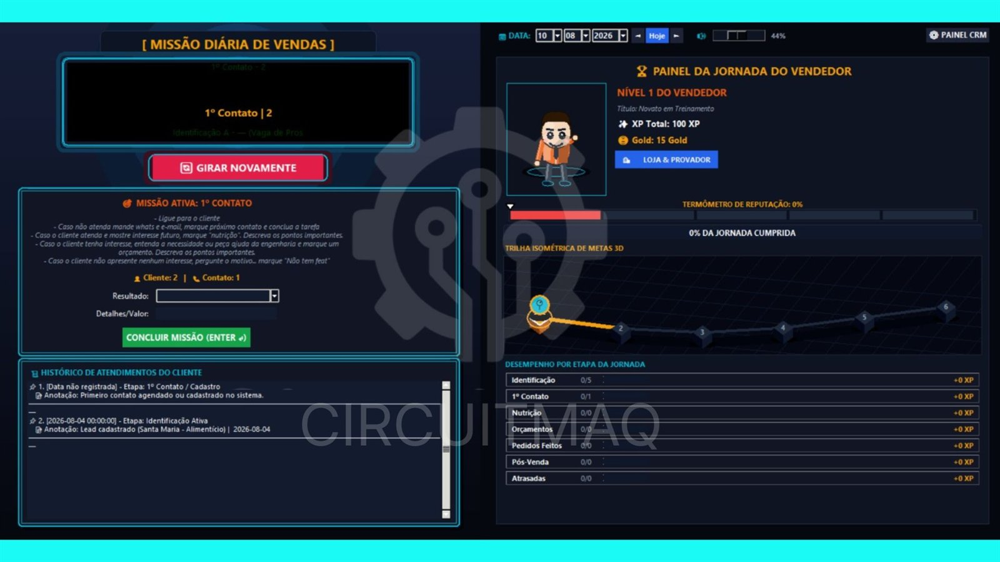
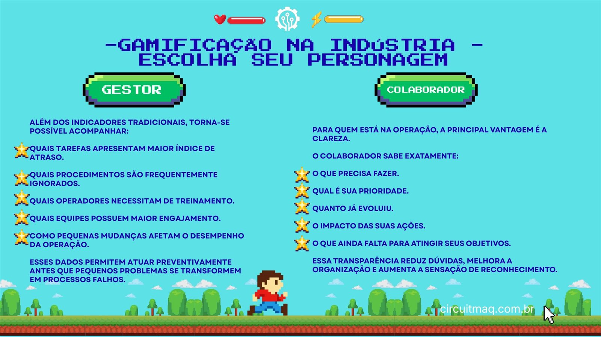

Automação e gestão
Gamificação na indústria: como aumentar o engajamento e a produtividade da equipe
Missões, pontos e metas claras podem tornar inspeções, checklists e apontamentos mais simples de cumprir. Veja como a ideia funciona na prática, de um CRM à linha de produção.

Quando falamos em gamificação, muitas pessoas imaginam videogames ou aplicativos de entretenimento. Porém, esse conceito vem sendo utilizado em diversos setores da indústria para resolver um problema comum: manter as equipes engajadas no cumprimento das tarefas diárias.
Em um ambiente industrial, procedimentos operacionais, inspeções, checklists, apontamentos de produção e manutenções preventivas fazem parte da rotina. Apesar de essenciais, essas atividades muitas vezes são vistas apenas como obrigações, o que pode gerar atrasos, esquecimentos e falhas.
A gamificação propõe uma mudança em como essas tarefas são percebidas pelo responsável e diminui a barreira para começar uma ação.
O que é gamificação?
Gamificação é a aplicação de elementos presentes nos jogos em atividades do dia a dia. Em vez de simplesmente informar que uma tarefa precisa ser realizada, o sistema cria uma experiência baseada em objetivos, evolução e reconhecimento.
Entre os elementos mais utilizados estão:
- Missões e desafios
- Pontuação (XP)
- Níveis de evolução
- Medalhas e conquistas
- Barras de progresso
- Rankings
- Feedback imediato
- Recompensas por desempenho
O objetivo não é transformar o ambiente industrial em um jogo, mas tornar as atividades mais claras, motivadoras e fáceis de acompanhar.
Por que a gamificação funciona?
Os jogos conseguem manter milhões de pessoas motivadas porque oferecem três elementos fundamentais:
- Objetivos claros
- Retorno imediato sobre cada ação
- Sensação constante de evolução
No ambiente corporativo, normalmente acontece o contrário. O colaborador executa dezenas de tarefas durante o mês e só recebe um retorno na reunião de resultados ou na avaliação de desempenho.
A gamificação reduz essa distância, pois cada atividade concluída gera um retorno quase instantâneo, permitindo que o colaborador acompanhe sua evolução e saiba exatamente o quanto falta para atingir seus objetivos.
Um exemplo prático: um CRM gamificado para vendedores
Imagine um vendedor utilizando um CRM tradicional. Ao abrir o sistema, ele encontra uma lista de clientes, tarefas e oportunidades de venda. Embora essas informações sejam importantes, muitas vezes a experiência é apenas operacional: preencher dados, atualizar status, agendar e registrar contatos.
Agora imagine esse mesmo CRM com gamificação. Ao iniciar o dia, o vendedor recebe uma série de missões, como:
- Entrar em contato com cinco clientes inativos
- Agendar três visitas
- Registrar todas as negociações do dia
- Atualizar o funil de vendas
- Enviar propostas pendentes
- Concluir treinamentos rápidos sobre novos produtos
Cada missão concluída concede pontos de experiência (XP), faz o personagem evoluir de nível e libera novas conquistas. Ao atingir determinadas metas, o vendedor pode desbloquear medalhas, receber recompensas internas ou participar de desafios entre equipes, tudo isso personalizado pelas demandas da empresa.
Além disso, um painel apresenta seu desempenho em tempo real, comparando resultados individuais com metas e indicadores que também são definidos pela empresa.
Esse modelo aumenta o engajamento porque transforma uma sequência de tarefas repetitivas em uma jornada com objetivos claros e progresso constante.

Para o gestor, isso significa acompanhar os resultados reais, em paralelo com o comportamento que leva a esses resultados. Em vez de analisar apenas quem vendeu mais, é possível identificar quem está realizando as atividades que aumentam as chances de fechar negócios.
E na indústria?
A mesma lógica pode ser aplicada ao ambiente industrial. Imagine um operador iniciando seu turno. Ao acessar o sistema, ele visualiza uma lista organizada de missões:
- Realizar inspeção da máquina
- Conferir dispositivos de segurança
- Executar manutenção autônoma
- Registrar indicadores de produção
- Confirmar limpeza do equipamento
- Realizar checklist de qualidade
- Registrar uma oportunidade de melhoria
- Reportar uma anomalia encontrada durante a operação
Cada atividade concluída gera experiência, aumenta seu nível e contribui para os objetivos da equipe. O sistema pode exibir uma barra de progresso do turno, informar quantas tarefas ainda faltam, apresentar indicadores de qualidade e reconhecer operadores que mantêm bons índices de segurança e produtividade.
Assim, atividades que antes eram vistas apenas como obrigações passam a fazer parte de uma jornada organizada e motivadora, o que também tem impacto positivo no sentimento de realização do colaborador.

Muito além dos rankings
Um erro comum é acreditar que gamificação significa criar rankings e um ambiente mais competitivo dentro da empresa. Na prática, os rankings são apenas um dos diversos recursos disponíveis. Em muitos casos, comparações excessivas podem até desmotivar colaboradores com menor experiência.
Por isso, a gamificação deve ser pensada para melhorar processos e orientar a evolução individual. Dessa forma, o gestor pode reconhecer o esforço de cada pessoa e não apenas olhar para metas, contribuindo para o aprendizado contínuo do líder e do liderado, e para um ambiente saudável de crescimento.
O futuro da gestão industrial
A Indústria 4.0 trouxe sensores inteligentes, conectividade, inteligência artificial e monitoramento em tempo real. A Indústria 5.0 coloca o ser humano no centro da operação novamente. A gamificação é um degrau entre a Indústria 4.0 e a 5.0: uma ferramenta estratégica para levar a indústria a um novo patamar.
Na Circuitmaq, acreditamos que a automação não deve apenas controlar máquinas. Ela também deve facilitar a rotina das equipes, incentivar boas práticas e fornecer aos gestores informações capazes de melhorar continuamente a operação. Afinal, uma empresa competitiva não depende apenas de equipamentos modernos. Ela depende de pessoas engajadas, processos bem definidos e ferramentas que transformem metas em resultados.
Quer descobrir como a gamificação pode ser aplicada na realidade da sua empresa? Entre em contato conosco e vamos conversar sobre o seu processo.